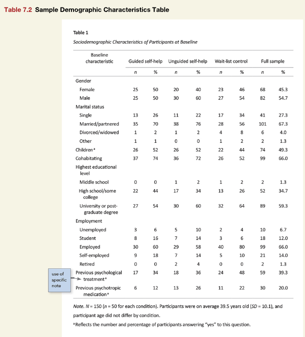

library(apa7)
library(flextable)
library(ftExtra)
library(tidyverse)
set_flextable_defaults(theme_fun = theme_apa,
font.family = "Times New Roman")Recreating APA Manual Table 7.2 in R with apa7
R
APA Style
Demonstration of the apa7 package, a flextable extension package
Making tables in APA style (Part 2 of 24)
In this 24-part series, each of the tables in Chapter 7 of the Publication Manual of the American Psychological Association (7th Edition) is recreated with apa7, flextable, easystats, and tidyverse functions.
NoteHighlights
- Hanging indents with the
hanging_indent - Conditional indentation with
padding - Decimal alignment with
align_chr
Figure 1 Shows some demographic summary data. Getting the data into the proper shape took a fair amount of code, but such data wrangling is not the point of this tutorial. The part that was tricky was getting the text wrapping and hanging indentation right.
Figure 1
Screenshot of the APA Manual’s Table 7.1

Hanging Indentation
Indentation is usually easy with flextable’s padding function. Here, some columns needed indentation, some hanging indentation, and some needed both. The best solution I found was to seize control of the formatting using stringr::str_wrap to find where to break the lines and then markdown (\\ to make new lines, and \u00A0, the figure space, to indent). The hanging_indent function implements these steps automatically.
Decimal Alignment
To my eye, numeric text often looks better when decimal aligned. The align_chr function allows text to be centered within a column and yet still aligned on the decimal (or any other character). By default, it pads the numeric vector with the figure space (  or \u2007) character, which is as wide as an integer.
Does flextable already have decimal alignment? Yes! However, its method requires the user to supply the position of a decimal tab within the column, which may require a fair bit of trial and error. Of course, if you need decimal alignment somewhere other than in the center of a column, the flextable method is the best option.
Turn off automatic formatting
By default, apa_flextable will automatically format columns with specific names (or endings). The Variable column is one of those, and by default, it will transform the text to title case. In this instance, we want sentence casing, so we list Variable in no_format_columns.
The remaining columns that normally get automatic formatting (i.e, columns ending with “_n”) will still get it. Setting auto_format_columns = FALSE, will turn off all automatic formatting.
```{r}
#| label: tbl-72
#| tbl-cap: Sociodemographic Characteristics of Participants at Baseline
#| apa-note:
#| - "*N* = 150 (*n* = 50 for each condition). Participants
#| were on average 39.5 years old (SD = 10.1), and
#| participant age did not differ by condition."
#| - "^a\u00A0^Reflects the number and percentage of
#| participants answering “yes” to this question."
# Make data
d <- tibble(
Variable = c(
rep("Gender", 2),
rep("Marital status",4),
rep("Children",2),
rep("Cohabiting", 2),
rep("Highest educational level", 3),
rep("Employment", 5),
rep("Previous\u00A0psychological treatment",2),
rep("Previous\u00A0psychotropic medication",2)
),
Group = c(
"Female","Male","Single","Married/partnered",
"Divorced/widowed","Other",
"Yes","No",
"Yes","No",
"Middle school", "High school/some college",
"University or post-graduate degree",
"Unemployed","Student","Employed",
"Self-employed","Retired","Yes","No","Yes","No"),
`Guided self-help` = c(
25L, 25L, 13L, 35L, 1L, 1L, 26L, 24L, 37L, 13L,
0L, 22L, 27L, 3L, 8L, 30L, 9L, 0L, 17L, 33L, 6L, 44L),
`Unguided self-help` = c(
20L, 30L, 11L, 38L, 1L, 0L, 26L, 24L, 36L, 14L, 1L,
17L, 30L, 5L, 7L, 29L, 7L, 2L, 18L, 32L, 13L, 37L),
`Wait-list control` = c(
23L, 27L, 17L, 28L, 4L, 1L, 22L, 28L, 26L, 24L,
1L, 13L, 32L, 2L, 3L, 40L, 5L, 0L, 24L, 26L, 11L, 39L)
)
# format data
d_formatted <- d |>
pivot_longer(-c(Variable, Group),
values_to = "n") |>
mutate(`%` = round(100 * n / sum(n)),
.by = c(Variable, name)) |>
mutate(`Full sample_n` = sum(n),
.by = c(Variable, Group)) |>
pivot_wider_name_first(values_from = c(n , `%`)) |>
relocate(`Full sample_n`, .after = last_col()) |>
mutate(
`Full sample_%` = 100 * `Full sample_n` /
sum(`Full sample_n`),
.by = c(Variable)
) |>
filter(Group != "No") |>
mutate(Group = ifelse(
Group == "Yes",
paste0(Variable, "^a^"), Group) |>
hanging_indent(width = 22)) |>
rename(`Baseline\ncharacteristic` = Group) |>
mutate(across(c(ends_with("_\\*n\\*"),
ends_with("_%")),
.fns = \(x) align_chr(x, accuracy = .1)))
# Make table
d_formatted |>
apa_flextable(
row_title_column = Variable,
row_title_border = NA,
line_spacing = 1.5,
horizontal_padding = 0,
font_size = 10.5,
left_column_padding = 10,
no_format_columns = Variable) |>
align(j = 1, align = "left") |>
width(width = c(1.55, rep(c(.6, .6, .05), 4)[-12]))
```Table 1
Sociodemographic Characteristics of Participants at Baseline
Baseline characteristic | Guided self-help | Unguided self-help | Wait-list control | Full sample | |||||||
|---|---|---|---|---|---|---|---|---|---|---|---|
n | % | n | % | n | % | n | % | ||||
Gender | |||||||||||
Female | 25 | 50 | 20 | 40 | 23 | 46 | 68 | 45.3 | |||
Male | 25 | 50 | 30 | 60 | 27 | 54 | 82 | 54.7 | |||
Marital status | |||||||||||
Single | 13 | 26 | 11 | 22 | 17 | 34 | 41 | 27.3 | |||
Married/partnered | 35 | 70 | 38 | 76 | 28 | 56 | 101 | 67.3 | |||
Divorced/widowed | 1 | 2 | 1 | 2 | 4 | 8 | 6 | 4.0 | |||
Other | 1 | 2 | 0 | 0 | 1 | 2 | 2 | 1.3 | |||
Childrena | 26 | 52 | 26 | 52 | 22 | 44 | 74 | 49.3 | |||
Cohabitinga | 37 | 74 | 36 | 72 | 26 | 52 | 99 | 66.0 | |||
Highest educational level | |||||||||||
Middle school | 0 | 0 | 1 | 2 | 1 | 2 | 2 | 1.4 | |||
High school/some | 22 | 45 | 17 | 35 | 13 | 28 | 52 | 36.4 | |||
University or post- | 27 | 55 | 30 | 62 | 32 | 70 | 89 | 62.2 | |||
Employment | |||||||||||
Unemployed | 3 | 6 | 5 | 10 | 2 | 4 | 10 | 6.7 | |||
Student | 8 | 16 | 7 | 14 | 3 | 6 | 18 | 12.0 | |||
Employed | 30 | 60 | 29 | 58 | 40 | 80 | 99 | 66.0 | |||
Self-employed | 9 | 18 | 7 | 14 | 5 | 10 | 21 | 14.0 | |||
Retired | 0 | 0 | 2 | 4 | 0 | 0 | 2 | 1.3 | |||
Previous psychological | 17 | 34 | 18 | 36 | 24 | 48 | 59 | 39.3 | |||
Previous psychotropic | 6 | 12 | 13 | 26 | 11 | 22 | 30 | 20.0 | |||
Note. N = 150 (n = 50 for each condition). Participants were on average 39.5 years old (SD = 10.1), and participant age did not differ by condition.
a Reflects the number and percentage of participants answering “yes” to this question.
Because I used apa-note instead of flextable functions, the notes would only appear if using the apaquarto extension.